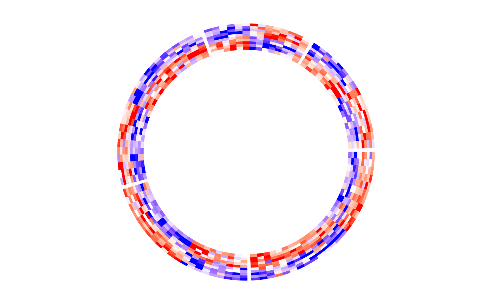

Object ccHeatmap will call the function circlize::circos.heatmap while drawing.
Usage
ccHeatmap(
mat,
split = NULL,
col,
na.col = "grey",
cell.border = NA,
cell.lty = 1,
cell.lwd = 1,
bg.border = NA,
bg.lty = par("lty"),
bg.lwd = par("lwd"),
ignore.white = is.na(cell.border),
cluster = TRUE,
clustering.method = "complete",
distance.method = "euclidean",
dend.callback = function(dend, m, si) reorder(dend, rowMeans(m)),
dend.side = c("none", "outside", "inside"),
dend.track.height = 0.1,
rownames.side = c("none", "outside", "inside"),
rownames.cex = 0.5,
rownames.font = par("font"),
rownames.col = "black",
show.sector.labels = FALSE,
cell_width = rep(1, nrow(mat)),
...
)Arguments
- mat
A matrix or a vector. The vector is transformed as a one-column matrix.
- split
A categorical variable. It splits the matrix into a list of matrices.
- col
If the values in the matrices are continuous, the color should be a color mapping generated by
colorRamp2. If the values are characters, the color should be a named color vector.- na.col
Color for
NAvalues.- cell.border
Border color of cells. A single scalar.
- cell.lty
Line type of cell borders. A single scalar.
- cell.lwd
Line width of cell borders. A single scalar.
- bg.border
Color for background border.
- bg.lty
Line type of the background border.
- bg.lwd
Line width of the background border.
- ignore.white
Whether to draw the white color?
- cluster
whether to apply clustering on rows. The value can also be a
dendrogram/hclustobject or other objects that can be converted to withas.dendrogram.- clustering.method
Clustering method, pass to
hclust.- distance.method
Distance method, pass to
dist.- dend.callback
A callback function that is applied to the dendrogram in every sector.
- dend.side
Side of the dendrograms relative to the heatmap track.
- dend.track.height
Track height of the dendrograms.
- rownames.side
Side of the row names relative to the heatmap track.
- rownames.cex
Cex of row names.
- rownames.font
Font of row names.
- rownames.col
Color of row names.
- show.sector.labels
Whether to show sector labels.
- cell_width
Relative widths of heatmap cells.
- ...
Pass to
circos.trackwhich draws the heatmap track.
Value
Object ccHeatmap
Examples
library(circlizePlus)
set.seed(123)
mat1 <- rbind(
cbind(
matrix(rnorm(50 * 5, mean = 1), nr = 50),
matrix(rnorm(50 * 5, mean = -1), nr = 50)
),
cbind(
matrix(rnorm(50 * 5, mean = -1), nr = 50),
matrix(rnorm(50 * 5, mean = 1), nr = 50)
)
)
rownames(mat1) <- paste0("R", 1:100)
colnames(mat1) <- paste0("C", 1:10)
mat1 <- mat1[sample(100, 100), ] # randomly permute rows
split <- sample(letters[1:5], 100, replace = TRUE)
spilt <- factor(split, levels = letters[1:5])
col_fun1 <- colorRamp2(c(-2, 0, 2), c("blue", "white", "red"))
ccHeatmap(mat = mat1, split = split, col = col_fun1)
